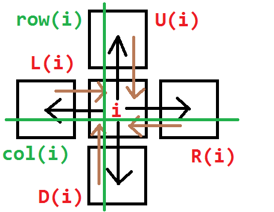
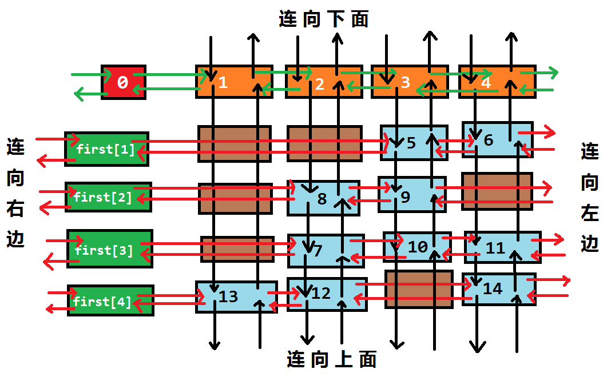

Dancing Links
本页面将介绍精确覆盖问题，解决这个问题的算法 X 算法，以及用来优化 X 算法的双向十字链表 Dancing Link。本页也将介绍如何在建模的配合下使用 DLX 解决一些搜索题。
精确覆盖问题
问题定义
精确覆盖问题（英文：Exact Cover Problem) 是指给定许多集合 \(S_i (1 \le i \le n)\) 以及一个集合 \(X\)，求满足以下条件的无序多元组 \((T_1, T_2, \cdots , T_m)\)：
- \(\forall i, j \in [1, m],T_i\bigcap T_j = \varnothing (i \neq j)\)
- \(X = \bigcup\limits_{i = 1}^{m}T_i\)
- \(\forall i \in[1, m], T_i \in \{S_1, S_2, \cdots, S_n\}\)
例如，若给出
则 \((S_1, S_4, S_5)\) 为一组合法解。
问题转化
将 \(\bigcup\limits_{i = 1}^{n}S_i\) 中的所有数离散化，可以得到这么一个模型：
给定一个 01 矩阵，你可以选择一些行，使得最终每列都恰好有一个 1。 举个例子，我们对上文中的例子进行建模，可以得到这么一个矩阵：
其中第 \(i\) 行表示着 \(S_i\)，而这一行的每个数依次表示 \([1 \in S_i],[3 \in S_i],[5 \in S_i],\cdots,[119 \in S_i]\)。
暴力 1
一种方法是枚举选择哪些行，最后检查这个方案是否合法。
因为每一行都有选或者不选两种状态，所以枚举行的时间复杂度是 \(O(2^n)\) 的；
而每次检查都需要 \(O(nm)\) 的时间复杂度。所以总的复杂度是 \(O(nm\cdot2^n)\)。
代码实现
1 2 3 4 5 6 7 8 9 10 11 12 13 14 15 16 17 18 19 20 21 22 23 24 25 | |
暴力 2
考虑到 01 矩阵的特殊性质，每一行都可以看做一个 \(m\) 位二进制数。
因此原问题转化为
给定 \(n\) 个 \(m\) 位二进制数，要求选择一些数，使得任意两个数的与都为 0，且所有数的或为 \(2^m - 1\)。
tmp表示的是截至目前被选中的二进制数的或。
因为每一行都有选或者不选两种状态，所以枚举行的时间复杂度为 \(O(2^n)\)；
而每次计算 tmp 都需要 \(O(n)\) 的时间复杂度。所以总的复杂度为 \(O(n\cdot2^n)\)。
代码实现
1 2 3 4 5 6 7 8 9 10 11 12 13 14 15 16 17 18 | |
X 算法
Donald E. Knuth 提出了 X 算法 (Algorithm X)，其思想与刚才的暴力差不多，但是方便优化。
继续以上文中中提到的例子为载体，得到一个这样的 01 矩阵：
-
此时第一行有 \(3\) 个 \(1\)，第二行有 \(3\) 个 \(1\)，第三行有 \(3\) 个 \(1\)，第四行有 \(2\) 个 \(1\)，第五行有 \(2\) 个 \(1\)，第六行有 \(3\) 个 \(1\)。选择第一行，将它删除，并将所有 \(1\) 所在的列打上标记；
\[ \begin{pmatrix} \color{Blue}0 & \color{Blue}0 & \color{Blue}1 & \color{Blue}0 & \color{Blue}1 & \color{Blue}1 & \color{Blue}0 \\ 1 & 0 & \color{Red}0 & 1 & \color{Red}0 & \color{Red}0 & 1 \\ 0 & 1 & \color{Red}1 & 0 & \color{Red}0 & \color{Red}1 & 0 \\ 1 & 0 & \color{Red}0 & 1 & \color{Red}0 & \color{Red}0 & 0 \\ 0 & 1 & \color{Red}0 & 0 & \color{Red}0 & \color{Red}0 & 1 \\ 0 & 0 & \color{Red}0 & 1 & \color{Red}1 & \color{Red}0 & 1 \end{pmatrix} \] -
选择所有被标记的列，将它们删除，并将这些列中含 \(1\) 的行打上标记；
\[ \begin{pmatrix} \color{Blue}0 & \color{Blue}0 & \color{Blue}1 & \color{Blue}0 & \color{Blue}1 & \color{Blue}1 & \color{Blue}0 \\ 1 & 0 & \color{Blue}0 & 1 & \color{Blue}0 & \color{Blue}0 & 1 \\ \color{Red}0 & \color{Red}1 & \color{Blue}1 & \color{Red}0 & \color{Blue}0 & \color{Blue}1 & \color{Red}0 \\ 1 & 0 & \color{Blue}0 & 1 & \color{Blue}0 & \color{Blue}0 & 0 \\ 0 & 1 & \color{Blue}0 & 0 & \color{Blue}0 & \color{Blue}0 & 1 \\ \color{Red}0 & \color{Red}0 & \color{Blue}0 & \color{Red}1 & \color{Blue}1 & \color{Blue}0 & \color{Red}1 \end{pmatrix} \] -
选择所有被标记的行，将它们删除；
\[ \begin{pmatrix} \color{Blue}0 & \color{Blue}0 & \color{Blue}1 & \color{Blue}0 & \color{Blue}1 & \color{Blue}1 & \color{Blue}0 \\ 1 & 0 & \color{Blue}0 & 1 & \color{Blue}0 & \color{Blue}0 & 1 \\ \color{Blue}0 & \color{Blue}1 & \color{Blue}1 & \color{Blue}0 & \color{Blue}0 & \color{Blue}1 & \color{Blue}0 \\ 1 & 0 & \color{Blue}0 & 1 & \color{Blue}0 & \color{Blue}0 & 0 \\ 0 & 1 & \color{Blue}0 & 0 & \color{Blue}0 & \color{Blue}0 & 1 \\ \color{Blue}0 & \color{Blue}0 & \color{Blue}0 & \color{Blue}1 & \color{Blue}1 & \color{Blue}0 & \color{Blue}1 \end{pmatrix} \]这表示这一行已被选择，且这一行的所有 \(1\) 所在的列不能有其他 \(1\) 了。
于是得到一个新的小 01 矩阵：
\[ \begin{pmatrix} 1 & 0 & 1 & 1 \\ 1 & 0 & 1 & 0 \\ 0 & 1 & 0 & 1 \end{pmatrix} \] -
此时第一行（原来的第二行）有 \(3\) 个 \(1\)，第二行（原来的第四行）有 \(2\) 个 \(1\)，第三行（原来的第五行）有 \(2\) 个 \(1\)。选择第一行（原来的第二行），将它删除，并将所有 \(1\) 所在的列打上标记；
\[ \begin{pmatrix} \color{Blue}1 & \color{Blue}0 & \color{Blue}1 & \color{Blue}1 \\ \color{Red}1 & 0 & \color{Red}1 & \color{Red}0 \\ \color{Red}0 & 1 & \color{Red}0 & \color{Red}1 \end{pmatrix} \] -
选择所有被标记的列，将它们删除，并将这些列中含 \(1\) 的行打上标记；
\[ \begin{pmatrix} \color{Blue}1 & \color{Blue}0 & \color{Blue}1 & \color{Blue}1 \\ \color{Blue}1 & \color{Red}0 & \color{Blue}1 & \color{Blue}0 \\ \color{Blue}0 & \color{Red}1 & \color{Blue}0 & \color{Blue}1 \end{pmatrix} \] -
选择所有被标记的行，将它们删除；
\[ \begin{pmatrix} \color{Blue}1 & \color{Blue}0 & \color{Blue}1 & \color{Blue}1 \\ \color{Blue}1 & \color{Blue}0 & \color{Blue}1 & \color{Blue}0 \\ \color{Blue}0 & \color{Blue}1 & \color{Blue}0 & \color{Blue}1 \end{pmatrix} \]这样就得到了一个空矩阵。但是上次删除的行
1 0 1 1不是全 \(1\) 的，说明选择有误；\[ \begin{pmatrix} \end{pmatrix} \] -
回溯到步骤 4，考虑选择第二行（原来的第四行），将它删除，并将所有 \(1\) 所在的列打上标记；
\[ \begin{pmatrix} \color{Red}1 & 0 & \color{Red}1 & 1 \\ \color{Blue}1 & \color{Blue}0 & \color{Blue}1 & \color{Blue}0 \\ \color{Red}0 & 1 & \color{Red}0 & 1 \end{pmatrix} \] -
选择所有被标记的列，将它们删除，并将这些列中含 \(1\) 的行打上标记；
\[ \begin{pmatrix} \color{Blue}1 & \color{Red}0 & \color{Blue}1 & \color{Red}1 \\ \color{Blue}1 & \color{Blue}0 & \color{Blue}1 & \color{Blue}0 \\ \color{Blue}0 & 1 & \color{Blue}0 & 1 \end{pmatrix} \] -
选择所有被标记的行，将它们删除；
\[ \begin{pmatrix} \color{Blue}1 & \color{Blue}0 & \color{Blue}1 & \color{Blue}1 \\ \color{Blue}1 & \color{Blue}0 & \color{Blue}1 & \color{Blue}0 \\ \color{Blue}0 & 1 & \color{Blue}0 & 1 \end{pmatrix} \]于是我们得到了这样的一个矩阵：
\[ \begin{pmatrix} 1 & 1 \end{pmatrix} \] -
此时第一行（原来的第五行）有 \(2\) 个 \(1\)，将它们全部删除，得到一个空矩阵：
\[ \begin{pmatrix} \end{pmatrix} \] -
上一次删除的时候，删除的是全 \(1\) 的行，因此成功，算法结束。
答案即为被删除的三行：\(1, 4, 5\)。
强烈建议自己模拟一遍矩阵删除、还原与回溯的过程后，再接着阅读下文。
通过上述步骤，可将 X 算法的流程概括如下：
- 对于现在的矩阵 \(M\)，选择并标记一列 \(r\)，将 \(r\) 添加至 \(S\) 中；
- 如果尝试了所有的 \(r\) 却无解，则算法结束，输出无解；
- 标记与 \(r\) 相关的行 \(r_i\) 和 \(c_i\)；
- 删除所有标记的行和列，得到新矩阵 \(M'\)；
-
如果 \(M'\) 为空，且 \(r\) 为全 \(1\)，则算法结束，输出被删除的行组成的集合 \(S\)；
如果 \(M'\) 为空，且 \(r\) 不全为 \(1\)，则恢复与 \(r\) 相关的行 \(r_i\) 以及列 \(c_i\)，跳转至步骤 1；
如果 \(M'\) 不为空，则跳转至步骤 1。
不难看出，X 算法需要大量的“删除行”、“删除列”和“恢复行”、“恢复列”的操作。
Donald E. Knuth 想到了用双向十字链表来维护这些操作。
而在双向十字链表上不断跳跃的过程被形象地比喻成“跳跃”，因此被用来优化 X 算法的双向十字链表也被称为“Dancing Links”。
Dancing Links 优化的 X 算法
预编译命令
1 | |
定义
双向十字链表中存在四个指针域，分别指向上、下、左、右的元素；且每个元素 \(i\) 在整个双向十字链表系中都对应着一个格子，因此还要表示 \(i\) 所在的列和所在的行，如图所示：

大型的双向链表则更为复杂：

每一行都有一个行首指示，每一列都有一个列指示。
行首指示为 first[]，列指示是我们虚拟出的 \(c + 1\) 个结点。
同时，每一列都有一个 siz[] 表示这一列的元素个数。
特殊地，\(0\) 号结点无右结点等价于这个 Dancing Links 为空。
1 2 3 4 | |
remove 操作
remove(c) 表示在 Dancing Links 中删除第 \(c\) 列以及与其相关的行和列。
先将 \(c\) 删除，此时：
- \(c\) 左侧的结点的右结点应为 \(c\) 的右结点。
- \(c\) 右侧的结点的左结点应为 \(c\) 的左结点。
即 L[R[c]] = L[c], R[L[c]] = R[c];。

然后顺着这一列往下走，把走过的每一行都删掉。
如何删掉每一行呢？枚举当前行的指针 \(j\)，此时：
- \(j\) 上方的结点的下结点应为 \(j\) 的下结点。
- \(j\) 下方的结点的上结点应为 \(j\) 的上结点。
注意要修改每一列的元素个数。
即 U[D[j]] = U[j], D[U[j]] = D[j], --siz[col[j]];。

remove 函数的代码实现如下：
1 2 3 4 5 6 7 8 9 | |
recover 操作
recover(c) 表示在 Dancing Links 中还原第 \(c\) 列以及与其相关的行和列。
recover(c) 即 remove(c) 的逆操作，这里不再赘述。
值得注意的是， recover(c) 的所有操作的顺序与 remove(c) 的操作恰好相反。
recover(c) 的代码实现如下：
1 2 3 4 5 | |
build 操作
build(r, c) 表示新建一个大小为 \(r \times c\)，即有 \(r\) 行，\(c\) 列的 Dancing Links。
新建 \(c + 1\) 个结点作为列指示。
第 \(i\) 个点的左结点为 \(i - 1\)，右结点为 \(i + 1\)，上结点为 \(i\)，下结点为 \(i\)。特殊地，\(0\) 结点的左结点为 \(c\)，\(c\) 结点的右结点为 \(0\)。
于是我们得到了一条链：

这样就初始化了一个 Dancing Link。
build(r, c) 的代码实现如下：
1 2 3 4 5 6 7 8 9 10 | |
insert 操作
insert(r, c) 表示在第 \(r\) 行，第 \(c\) 列插入一个结点。
插入操作分为两种情况：
-
如果第 \(r\) 行没有元素，那么直接插入一个元素，并使
first[r]指向这个元素。这可以通过
first[r] = L[idx] = R[idx] = idx;来实现。 -
如果第 \(r\) 行有元素，那么将这个新元素用一种特殊的方式与 \(c\) 和 \(first(r)\) 连接起来。
设这个新元素为 \(idx\)，然后：
-
把 \(idx\) 插入到 \(c\) 的正下方，此时：
- \(idx\) 下方的结点为原来 \(c\) 的下结点；
- \(idx\) 下方的结点（即原来 \(c\) 的下结点）的上结点为 \(idx\);
- \(idx\) 的上结点为 \(c\)；
- \(c\) 的下结点为 \(idx\)。
注意记录 \(idx\) 的所在列和所在行，以及更新这一列的元素个数。
1 2
col[++idx] = c, row[idx] = r, ++siz[c]; U[idx] = c, D[idx] = D[c], U[D[c]] = idx, D[c] = idx;强烈建议读者完全掌握这几步的顺序后再继续阅读本文。
-
把 \(idx\) 插入到 \(first(r)\) 的正右方，此时：
- \(idx\) 右侧的结点为原来 \(first(r)\) 的右结点；
- 原来 \(first(r)\) 右侧的结点的左结点为 \(idx\)；
- \(idx\) 的左结点为 \(first(r)\)；
-
\(first(r)\) 的右结点为 \(idx\)。
1 2
L[idx] = first[r], R[idx] = R[first[r]]; R[first[r]] = idx, L[R[first[r]]] = idx;强烈建议读者完全掌握这几步的顺序后再继续阅读本文。
-
insert(r, c) 这个操作可以通过图片来辅助理解：

留心曲线箭头的方向。
insert(r, c) 的代码实现如下：
1 2 3 4 5 6 7 8 9 10 | |
dance 操作
dance() 即为递归地删除以及还原各个行列的过程。
- 如果 \(0\) 号结点没有右结点，那么矩阵为空，记录答案并返回；
- 选择列元素个数最少的一列，并删掉这一列；
- 遍历这一列所有有 \(1\) 的行，枚举它是否被选择；
- 递归调用
dance()，如果可行，则返回；如果不可行，则恢复被选择的行； - 如果无解，则返回。
dance() 的代码实现如下：
1 2 3 4 5 6 7 8 9 10 11 12 13 14 15 16 17 | |
其中 stk[] 用来记录答案。
注意我们每次优先选择列元素个数最少的一列进行删除，这样能保证程序具有一定的启发性，使搜索树分支最少。
模板
模板代码
1 | |
时间复杂度
DLX 递归及回溯的次数与矩阵中 \(1\) 的个数有关，与矩阵的 \(r, c\) 等参数无关。因此，它的时间复杂度是 指数级 的，理论复杂度大概在 \(O(c^n)\) 左右，其中 \(c\) 为某个非常接近于 \(1\) 的常数，\(n\) 为矩阵中 \(1\) 的个数。
但实际情况下 DLX 表现良好，一般能解决大部分的问题。
建模
DLX 的难点，不全在于链表的建立，而在于建模。
请确保已经完全掌握 DLX 模板后再继续阅读本文。
我们每拿到一个题，应该考虑行和列所表示的意义：
-
行表示决策，因为每行对应着一个集合，也就对应着选/不选；
-
列表示状态，因为第 \(i\) 列对应着某个条件 \(P_i\)。
对于某一行而言，由于不同的列的值不尽相同，我们 由不同的状态，定义了一个决策。
例题 1 P1784 数独
解题思路
先考虑决策是什么。
在这一题中，每一个决策可以用形如 \((r, c, w)\) 的有序三元组表示。
注意到“宫”并不是决策的参数，因为它 可以被每个确定的 \((r, c)\) 表示。
因此有 \(9 \times 9 \times 9 = 729\) 行。
再考虑状态是什么。
我们思考一下 \((r, c, w)\) 这个决将会造成什么影响。记 \((r, c)\) 所在的宫为 \(b\)。
- 第 \(r\) 行用了一个 \(w\)（用 \(9 \times 9 = 81\) 列表示）；
- 第 \(c\) 列用了一个 \(w\)（用 \(9 \times 9 = 81\) 列表示）；
- 第 \(b\) 宫用了一个 \(w\)（用 \(9 \times 9 = 81\) 列表示）；
- \((r, c)\) 中填入了一个数（用 \(9 \times 9 = 81\) 列表示）。
因此有 \(81 \times 4 = 324\) 列，共 \(729 \times 4 = 2916\) 个 \(1\)。
至此，我们成功地将 \(9 \times 9\) 的数独问题转化成了一个 有 \(729\) 行，\(324\) 列，共 \(2916\) 个 \(1\) 的精确覆盖问题。
参考代码
1 | |
例题 2 靶形数独
参考代码
1 | |
例题 3 「NOI2005」智慧珠游戏
解题思路
定义：题中给我们的智慧珠的形态，称为这个智慧珠的标准形态。
显然，我们可以通过改变两个参数 \(d\)（表示顺时针旋转 \(90^{\circ}\) 的次数）和 \(f\)（是否水平翻转）来改变这个智慧珠的形态。
仍然，我们先考虑决策是什么。
在这一题中，每一个决策可以用形如 \((v, d, f, i)\) 的有序五元组表示。
表示第 \(i\) 个智慧珠的标准形态的左上角的位置，序号为 \(v\)，经过了 \(d\) 次顺时针转 \(90^{\circ}\)。
巧合的是，我们可以令 \(f = 1\) 时不水平翻转，\(f = -1\) 时水平翻转，从而达到简化代码的目的。
因此有 \(55 \times 4 \times 2 \times 12 = 5280\) 行。
需要注意的是，因为一些不合法的填充，如 \((1, 0, 1, 4)\)，
所以 在实际操作中，空的智慧珠棋盘也只需要建出 \(2730\) 行。
再考虑状态是什么。
这一题的状态比较简单。
我们思考一下，\((v, d, f, i)\) 这个决策会造成什么影响。
-
某些格子被占了（用 \(55\) 列表示）；
-
第 \(i\) 个智慧珠被用了（用 \(12\) 列表示）。
因此有 \(55 + 12 = 67\) 列，共 \(5280 \times (5 + 1) = 31680\) 个 \(1\)。
至此，我们成功地将智慧珠游戏转化成了一个 有 \(5280\) 行，\(67\) 列，共 \(31680\) 个 \(1\) 的精确覆盖问题。
参考代码
1 | |